by Samia A. Halaby
To be conducted at The International Center of BeitLahem
In cooperation with Faten Nastas Mitwasi, Art Coordinator
36.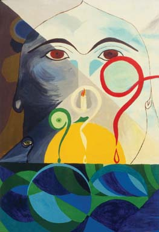
37.
36. Zahed Izat Harash, "Questions," 1998. Oil on canvas, 120 x 90 cm.
37. Zahed I. Harash, "Women and Harvest," 2000. Ink on paper, 29.5 x 42 cm.
38.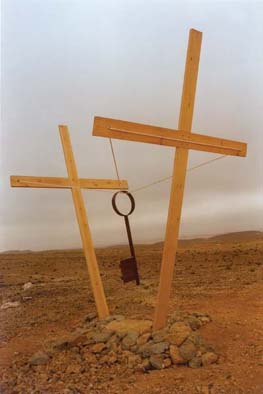 39.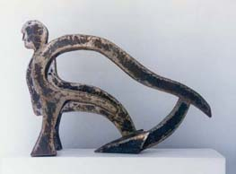
28. Ahmad Kanaan, "What About Coexistence," 1995. Wood, steel, and rope, 5 x 2 x 4 meters.
29. Ahmad Kanaan, "Harvester," 2000. Steel, 70 x 50 x 30 cm.
40. 41.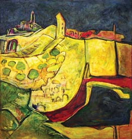
41.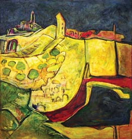
40. Khalil Rayan, "Barrakiyat," 1971. Etching 1/10, 34.5 x 50 cm.
41. Khalil Rayan, "Al Quds at Night," 1988. Oil on canvas, 102 x 107 cm.
42. 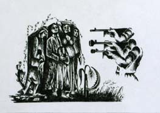
42. Abdul Tamam, "Harvest Them," 1999. Ink on paper, 21 x 30 cm.
43. 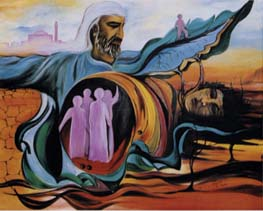 44. 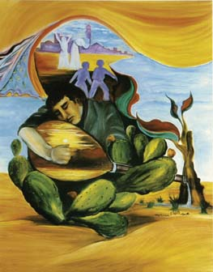
43. Abdul Tamam, untitled, 1996. Oil on canvas, 80 x 100 cm. approx.
44. Abdul Tamam, untitled, 1996. Oil on canvas, 100 x 80 cm approx.
45.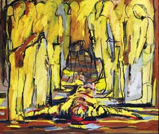 46.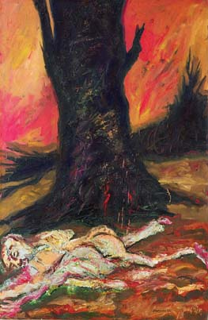
45. Osama Said, "Observers," 1988. Oil on canvas, 140 x 160 cm.
46. Osama Said, "Remains of Massacre," 1991. Oil on canvas, 145 x 97 cm.
47. 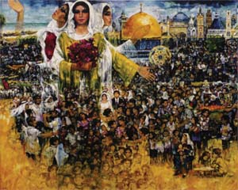
47. Ismail Shammout, "Life Prevails," 1999. Laser print on canvas, 68.5 x 84.5 cm.
48. 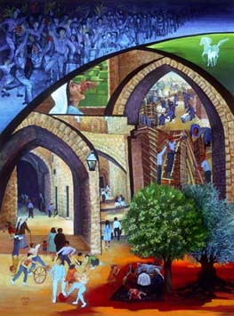 49. 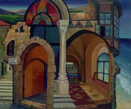
48. Tamam Al Akhal, "Scent of Return," 1994. Oil on canvas, 80 x 100 cm.
49. Tamam Al Akhal, "Shoshona Occupies My Home," 1988. Oil on canvas. 50 x 60 cm approx.
50. 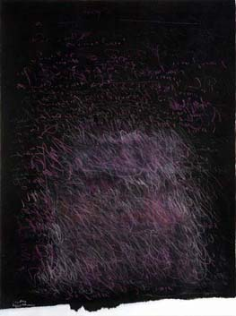 51. 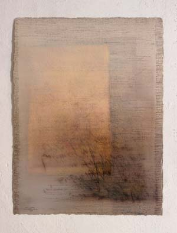
50. Jumana Al Husseini, untitled, 1997. Mixed media on paper, 57.5 x 76 cm.
51. Jumana Al Husseini, untitled, 1997. Mixed media on paper, 57.5 x 76 cm.
52. 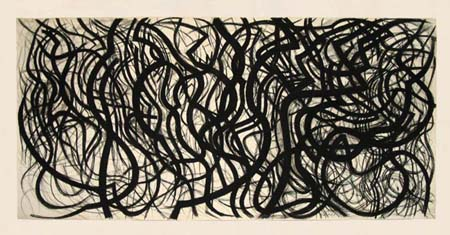
52. Samia A. Halaby, "Calligraphic Dance," 1984. Charcoal on paper, 50 x 104"
53. 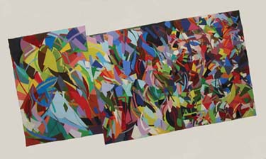
53. Samia A. Halaby, "Centers of Energy: Cuba," 1989. Acrylic on
54. 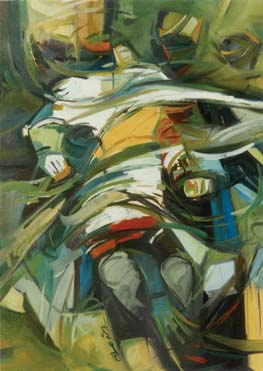 55. 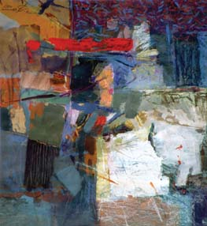
54. Abdul Raouf Shamoun, "Intifada," 1988. Oil on canvas, 80 x 65 cm.
55. Abdul Raouf Shamoun, "Walls of Wihdat," 1994. Mixed media, 41 x 38 cm.
56. 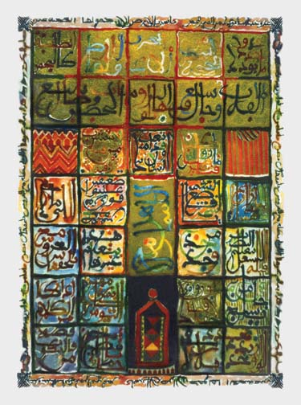 57. 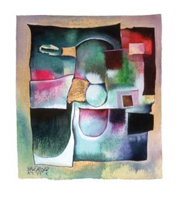
56. Samir Salameh, "Folk Sayings," 1983. Watercolor on paper, 60 x 40 cm.
57. Vladimir Tamari, untitled, 1986. Watercolor on paper, 16.5 x 14.5 cm.
58. 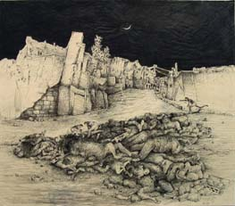 59. 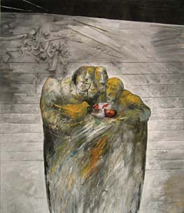
58. Adnaan Yahya, "Sabra and Shatilla," 1983. Ink on paper, 55 x 62.5 cm.
59. Adnaan Yahya, "Children in the Hands of Oppressors," 1993. Mixed media collage, 58.5 x 69 cm.
60. 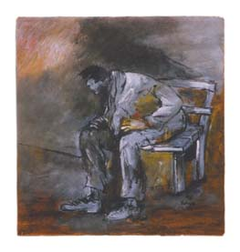 61. 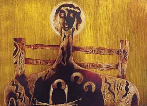
60. Adnaan Yahya, "Thinking, A Sudden Moment," 1986. Acrylic on wood, 25 x 25 cm.
61. Muhamad Al Wahibi, "Madonna of Al Khalil," 1995. Scratch board, 63 x 88 cm.
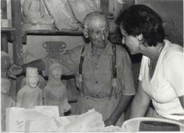
Vera Tamari with Hana Musmar, 1985.
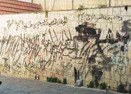 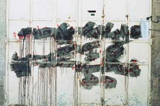
Graffiti on a closed shop inside the old city walls of Al Quds, 1995.
Graffiti on walls of the old city of Al Quds, 1995.
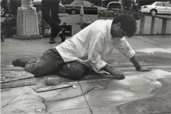
Hani Shihada drawing on the sidewalks of New York, 1995.
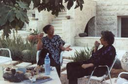
Samia A. Halaby with Mona Saudi in Amman, 1997.
![[Art on the Net]](/images/artnet_button.gif)